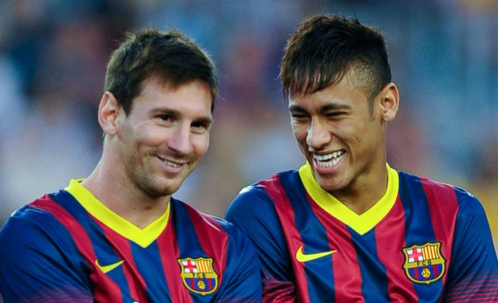

Lionel Andrés Messi
The face of the football

Lionel Messi with their friend and partner Neymar Jr
Here's a time line of Lionel Messi's life:
- 1987 - Born in Rosario, Argentina
- 1994 - He began training in the lower divisions at Newell's Old Boys. At the age of eight, he was diagnosed with growth hormone deficiency
- 2000 - After being recruited by Federico Vairo in Rosario, Messi went to Buenos Aires to try out for River Plate. Eduardo Abrahamian, in charge of the club's children's divisions, asked to hire him, but this never materialized
- 2003 - Debut in Barcelona
- 2005 - Get Spanish citizenship
- 2009 - He won six top-tier trophies in a single year. At 22, he won his first Ballon d'Or and the FIFA World Player of the Year award, both times by the largest voting margin in the history of each trophy
- 2011 - Fifth League and third Champions League. He finished the season with 53 goals and 24 assists in all competitions, making him Barcelona's all-time leading goalscorer in one season
- 2014 - Argentina from the hand of Messi plays and loses the world final against Germany in Brazil
- 2016 - On January 11, 2016, Messi won the Ballon d'Or for the fifth time, a record
- 2018 - Captain of Barcelona, tenth League and sixth Golden Shoe
- 2019 - Sixth Ballon d'Or and Laureus Award. On May 21, 2019, Messi was included in Lionel Scaloni's Argentina 23-man roster for the 2019 Copa América
- 2020 - Top historical club scorer and on June 30 the contract that linked him with the Barcelona club ended
- 2020/21 - On August 10, Paris Saint-Germain announced the arrival of Messi through a video on their social networks. The player signed a two-year contract with the option of extending it for one season, with a salary of 36.5 million euros and would wear number 30, the same one with which he debuted at Barcelona
- 2021 - On July 10, Argentina defeated Brazil at the Maracana 1-0 in the final. In his fifth international final, Messi won his first title, Argentina's first since the 1993 Copa América and the fifteenth Copa América in its history
- 2022 - Under the direction of Scaloni and after playing the first four qualifying matches for the Qatar World Cup, the Argentine team was second in the table with 10 points, behind Brazil, with 12. Against Peru, Messi became the player with more victories (85) in the history of his selection
"Someday I will tell my grandchildren that I trained Leo Messi. You have to talk to Messi very little, listen well to the little he says. And let no one forget: Messi should never be taken out, not even for an ovation. Don't write about him, don't try to describe what he does; just look at it"
--Pep Guardiola